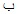
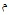
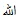
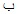
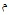
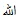
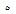
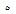

[349] Tasavvufi düşüncede harflere özellikle de huruf-u mukatta’a yanında “Besmele” deki ( ) , () ve () harflerine ve yine besmelede yer alan Allah () lafzındaki elif (
) , () ve () harflerine ve yine besmelede yer alan Allah () lafzındaki elif ( ), birinci lam (), ikinci () ve he () harflerine anlam verme geleneği aşağı yukarı bütün mutasavvıflarda vardır. Bu harflerle ilgili yapılan Hurufi yorumlar konusunda bkz. es-Sülem, a.g.e., I, s. 25 vd. 31; el-Kuşeyri, a.g.e., I, s. 8-9.
), birinci lam (), ikinci () ve he () harflerine anlam verme geleneği aşağı yukarı bütün mutasavvıflarda vardır. Bu harflerle ilgili yapılan Hurufi yorumlar konusunda bkz. es-Sülem, a.g.e., I, s. 25 vd. 31; el-Kuşeyri, a.g.e., I, s. 8-9.